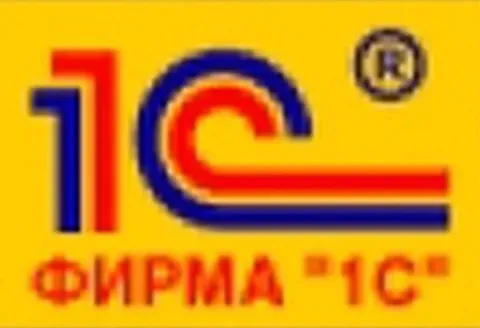

Выбор стека разработки в компании - чертовски важная и сложная штука. Нужно, чтобы технологиям, которые выбраны для основных продуктов, можно было доверять. Чтобы они были удобными, понятными и гибкими. А еще важнее - долговечными с точки зрения поддержки.
Поэтому мы приняли решение переписать Лавку полностью на 1С. Причин тому много:
- это отечественное решение с надежной поддержкой, не привязанное к иностранным вендорам.
- максимальная гибкость и модульность фреймворка 1С - хоть тебе монолиты, хоть микросервисы.
- на рынке существует тьма готовых модулей для решения любых типовых проблем (как от вендора, так и в опен-сорсе). Особенно это актуально в тех частях продукта, где важно соотвествовать закнондательству и нормативам, которые для всех едины - интеграции с любыми госсистемами типа "честного знака", реализация налоговых расчетов и прочее.
- низкий порог входа для разработчиков (по сравнению с некоторыми другими языками и фреймворками, где ничего не понятно), наличие квалифицированных специалистов на рынке.
- в Лавке уже есть большая экспертиза по 1С, притом кажется - самая сильная в Яндексе.
- не все знают, но на 1С можно делать и мобильные приложения! Я уж молчу про веб-интерфейсы.
На самом деле, если вы делаете любую систему, связанную с торговлей, товародвижением, учетом, пытаться обойтись без 1С просто глупо - это индустриальный стандарт в стране с большим коммьюнити и обилием готовых решений. На 1С можно писать любые сервисы с любой логикой - фреймворк мощный и удобный. Хоть под линукс-сервера, хоть он-прем коробки, толстые и тонкие клиенты, десктоп, веб, мобилка - все в одном, но без жесткого лока архитектуры. И, кстати, разработческие ИИ-ассистенты отлично дружат с 1С. Это ли не таргет-стейт?
---
Ладно, это была первоапрельская шутка. Но лишь отчасти.
Во-первых, все достоинства 1С, которые я описал, имеют место быть. И в Лавке 1С используется для систем ERP, учета, коммерции.
Во-вторых, мы действительно ищем сейчас 1С-разработчика в команду ERP. Задачи разнообразные, интересные, прикладные и инновационные.
Ну и добавлю, что еще мы ищем python+go разработчика в команду Warehouse Managenent System, а также C++ разработчика в логистику.
Пишите https://t.me/jkennedy или jkennedy@yandex-team.ru
